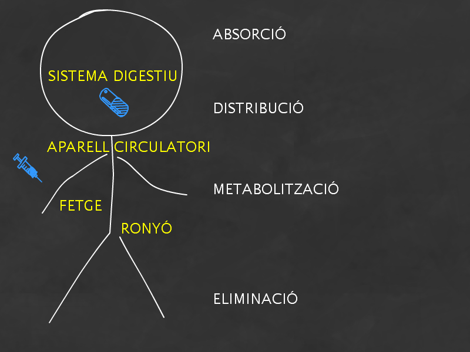
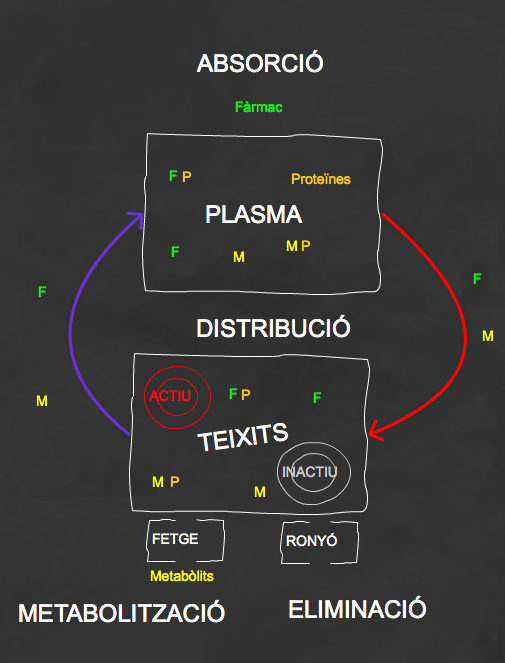
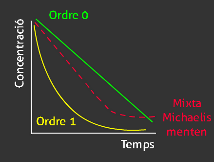
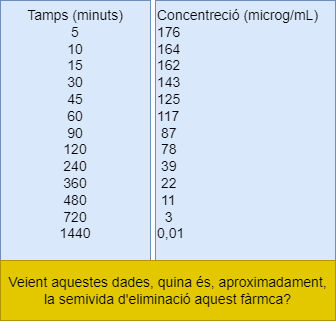

Què és:
Una disciplina que estudia els processos als que es veu sotmès un medicament, quan s'administra en l'organisme.
Una disciplina que estudia els efectes que es produeixen sobre l'organisme quan s'administra un medicament.

|  |
Per que un fàrmac faci efecte ha de ser absorbit. Per que un fàrmac accedeixi als teixits ha d'estar en forma lliure. El fàrmac arriba a diferents teixits de l'organisme però només produeix efectes en alguns d'ells. Es freqüent que un fàrmac s'hagi de metabolitzar per a poder ser eliminat. Els processos farmacocinètics són simultanis. |
Marge de concentracions plasmàtiques del medicament en el que la probabilitat d'obtenir un efecte terapèutic adequat és major
La biodisponibilitat (f) és un paràmetre que ens permet definir la fracció de fàrmac administrat que arriba a la circulació sistèmica i que, per tant, està en disposició d'arribar al lloc on ha de fer la seva acció.
Quina és la biodisponibilitat d'un medicament administrat per via intravenosa?
100%
Pensa: quina d'aquestes vies d'administració té una absorció completa?
oral | sublingual | rectal | subcutània | tòpica
Cap de les anteriors!
Rarament, alguna d'aquestes vies d'administració tindrà
una biodisponibilitat del 100%
Quina és la biodisponibilitat oral d'un fàrmac que només se'n absorbeix una quarta part de la dosi administrada?
75%
25%
Quina de les dos presentacions és més adequada per a un analgèsic que s'utilitza per al tractament d'un dolor agut?
A
B
Model mono o bi-compartimental
C=D/V
V=D/C
 Les cinètica d'eliminació d'un fàrmac està relacionada amb els mecanismes d'eliminació que hi participen i amb el seu grau de saturabilitat
Ke (Constant d'eliminació): pendent de la recta de la representació semilogarímicat1/2 (Semivida d'eliminació): temps que la concentració tarda en reduir-se a la meitatCl (Depuració plasmàtica): volum que queda net de fàrmac per unitat de tempst1/2 = 0,693/Ke(observa la relació entre la t1/2 i la Ke)
t1/2equilibri = 0,693 · Vd/Cl
(reflexiona sobre la relació entre la t1/2 i el Vd i el Cl. Cerca-li una explicació)
A la taula s'hi representa el temps en que s'ha realitzat la determinació i la concentració obtinguda
Distribució → Vd
Eliminació → ke, Cl, t1/2Vd: Volum de distribució aparent
Ke: constant d'elimiació
Cl: Depuració plasmàtica
t1/2 Semivida d'eliminació
Fixa't que no hi ha procés d'absorció perquè el fàrmac s'ha administrat per la via intravenosa
Distribució → Vd
Eliminació → ke, Cl, t1/2
Ke=0.007 min-1 (pendent de la recta)
Ke=Cl/Vd => Cl=ke · Vd= 0.007 · 568 = 3.9 mL/min
t1/2=0.693/0.007=99 min
Quina dosi manteniment caldria administrar-li, per via intravenosa, cada 6 hores per tal d'assolir unes concentracions plasmàtiques en equilibri estable de 4mg/L?
Un fàrmac que segueix una cinètica d'ordre 1, tarda entre 4 i 5 semivides d'eliminació en tenir nivells plasmàtics pràcticament indetectables